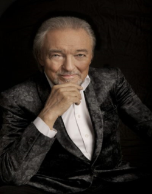

Multimedia a HTML
Tabulky
Multimedia
Fotogalerie
Obrázky v HTML

Český zpěvák Karel Gott
Audio a video v HTML
Váš prohlížeč nepodporuje značku videa.
Pánvička
Váš prohlížeč nepodporuje zvukový prvek.
Čmálak ve volné přírodě
Video z YouTube
Video na youtube